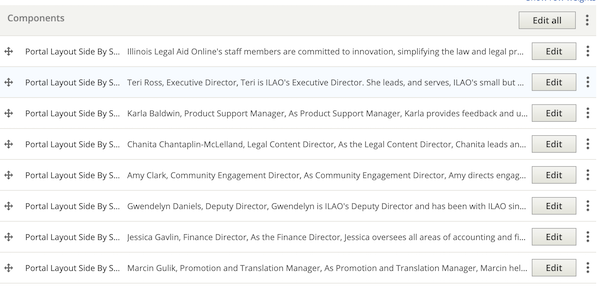

Staff, Board & YPB pages
Staff
The Staff page lists each staff member. Each staff member is added using a separate portal layout side-by-side component.
Staff are ordered with the Executive Director listed first, then alphabetical. In the summer, a media + text block is added to list all of our interns and fellows at the bottom.
Each portal layout side-by-sider and should adhere to this style:
Image; if no image has been provided, use the people placeholder image. If an image is provided and is large, it should be resized to 300 pixels wide.
Name in the heading field
Next line is their job title, italicized
Biography in the body field
If one needs to insert a new board member, they may need to edit the portal layout side-by-side under the new board member to change the image location to preserve the alternating left/right layout.
Board
The Board of Directors page lists each board member. Each board member is added using a separate portal layout side-by-side component.
Board members are ordered first by office, then alphabetical. Officers are listed in the order of chair, vice-chair, treasurer, secretary.
Each portal layout side-by-sider and should adhere to this style:
Image; if no image has been provided, use the people placeholder image. If an image is provided and is large, it should be resized to 300 pixels wide.
Name, bolded (or put in heading field)
If the board member is an officer, their officer position is listed after their name
Next line is their job title and affiliation, italicized
Biography in the body field
If one needs to insert a new board member, they may need to edit the portal layout side-by-side under the new board member to change the image location to preserve the alternating left/right layout.
YPB
The Young Professionals Board page lists the name and role of each member in a single text block. This can be edited by anyone on the staff.